Home / Past papers / MLT End Term / this paper
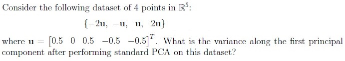
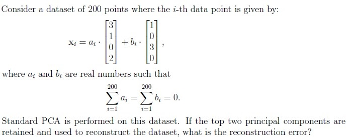
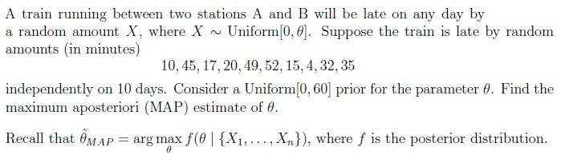
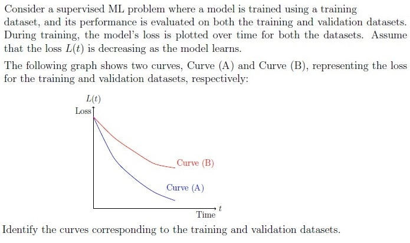
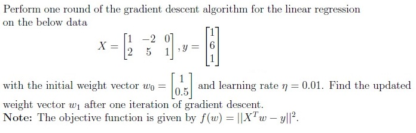
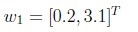
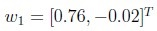
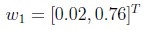
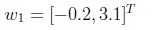
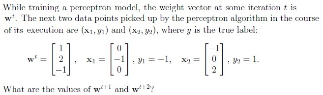
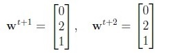
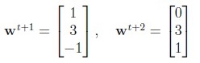
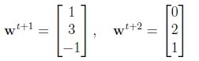
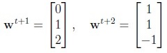
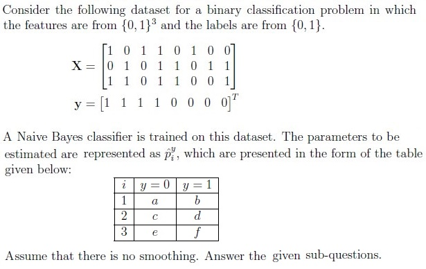
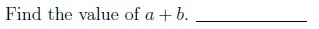
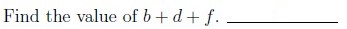
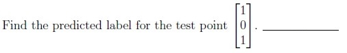
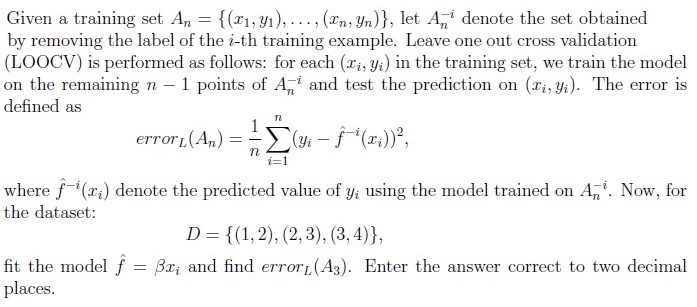
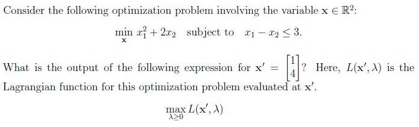
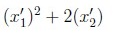
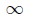
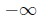
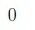
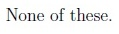
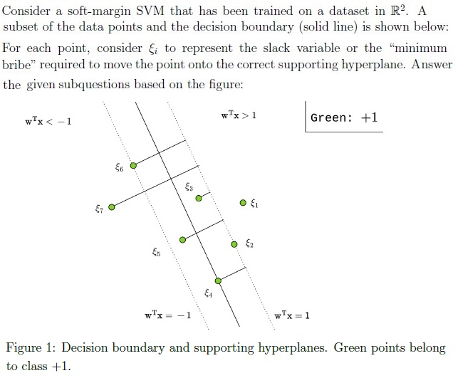
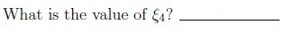
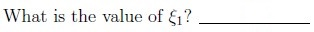
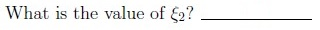
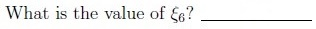
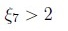
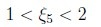
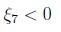
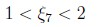
Auto-generated summary from the source site. Handy as a checklist; the lessons above explain each idea from scratch.
Here’s a structured summary of core topics, concepts, principles, and equations essential for the exam, followed by Mermaid knowledge graphs to visualize relationships.
Steps:
Reconstruction Error: Sum of variances of discarded components.
Key Equations:
Maximum A Posteriori (MAP) Estimate:
Threshold Adjustment:
Naïve Bayes:
Parameters : Empirical frequencies (Q10–Q12).
Properties:
Algorithm:
Training vs. Validation Loss:
Leave-One-Out Cross-Validation (LOOCV):
Gradient Descent Update:
Lagrangian & Constrained Optimization:
Soft-Margin SVM:
Support Vectors:
AdaBoost:
Bagging: